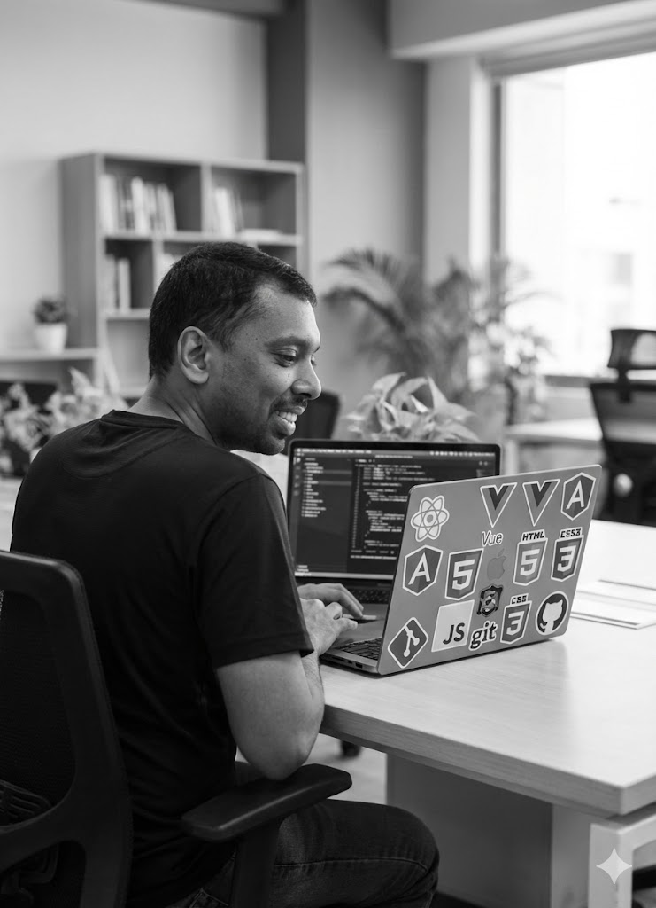

Currículo
Luciano Mendonça, formado em Analise e Desenvolvimento de Sistemas e apaixonado por tecnologia.
Experiências
- Solus Computação (2016 - 2017) - Analista de suporte
- Solus Computação (2017 - 2020) - Analista de implantação
- Solus Computação (2020 - 2022) - Coordenador de qualidade
- Solus Computação (2022 - atual) - Líder de equipe de qualidade
Estudos
- Selenium - Udemy
- Rest Assured - Udemy
- Especialização em Java - UTFPR
- HTML e CSS - Alura
- Angular - Alura
